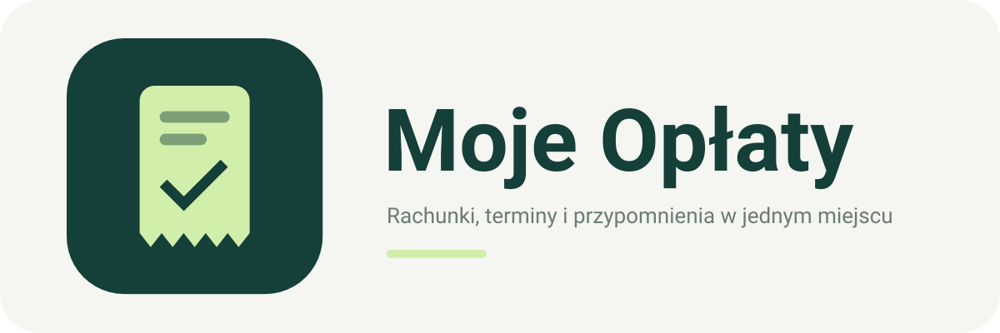

Rachunki, terminy i przypomnienia w jednym miejscu.
Do czego służy aplikacja?
Moje Opłaty to aplikacja na Androida do ręcznego prowadzenia własnego rejestru opłat. Pozwala zapisywać rachunki, kwoty i terminy, porządkować je w kategorie oraz oznaczać zapłatę. Obsługuje opłaty miesięczne, roczne i jednorazowe oraz historię rachunków.
Codzienne przypomnienie pomaga pamiętać o nieopłaconych rachunkach i uzupełnieniu brakujących kwot lub terminów. Przelewy wykonujesz samodzielnie — aplikacja nie łączy się z bankiem i nie zleca płatności.
Opcjonalne połączenie z Google Drive
Dane są zapisywane lokalnie na telefonie. Po połączeniu konta Google aplikacja synchronizuje rejestr i tworzy kopie w folderze NaCzas na Twoim Dysku Google. Synchronizacja działa przy otwarciu, kilka sekund po ostatniej edycji i przy wyjściu z aplikacji. Bez internetu możesz nadal zmieniać dane lokalnie.
Połączenie korzysta z uprawnienia drive.file: obejmuje pliki utworzone przez aplikację lub udostępnione jej przez użytkownika. Moje Opłaty nie prosi o dostęp do całego Dysku ani do Gmaila.
Dostępność i kontakt
Aplikacja jest rozwijana jako projekt do własnego użytku. Działa wersja na Androida oraz wersja na Windows do odczytu rachunków synchronizowanych z telefonu. Ta strona opisuje aplikację i zasady prywatności, nie udostępnia rachunków ani plików instalacyjnych.
Autor: Andrzej Korotusz
Kontakt i pomoc: andrzejkorotusz@gmail.com